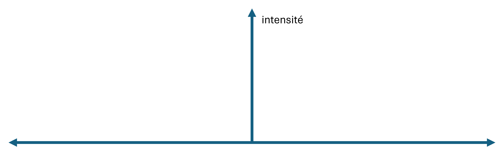

Émotion et Cognition
Quels rapports entretiennent-elles ? - L3 CM
Présentation du cours
Objectifs du cours
- Définir les émotions
- Comprendre comment les émotions influencent les processus cognitifs (attention/mémoire/raisonnement)
- Comprendre comment les processus cognitifs peuvent moduler les expériences émotionnelles (régulation émotionnelle)
- Examiner les différences individuelles dans ces processus et les interactions
Répartition des tâches
Cours :
‒ Apporter des connaissances générales et méthodologiques sur l’étude des relations entre émotion et cognition
Étudiant.e :
‒ Mettre en relation ces connaissances et un champ de recherche à choisir (e.g., vieillissement, apprentissages, développement de l’enfant, orientation)
Évaluation du cours
‒ Sujet type cadre théorique dans une réponse à un AAP/ abstract (sans les résultats) en un nombre de mots donné
‒ Critères de réussite :
- Sélection et mise en lien de notions apprises en cours
- Fluidité et lisibilité de la rédaction
- Apports de sa recherche personnelle sur le sujet (lectures complémentaires)Source Principale
‒ Lemaire, P. (2021). Émotion et cognition: Série LMD. De Boeck Supérieur.
 ## Plan de la première partie du cours
## Plan de la première partie du cours
Introduction => Quelles questions en psychologie sur le lien entre émotion et cognition ?
Définition des émotions => Modèles théoriques
Comment étudier le lien entre émotion et cognition ? => Que cherche-t-on ? => Induire l’émotion ou utiliser ses occurences naturelles => Induire l’émotion en dehors de la tâche ou par la tâche (incidentes vs. intégrales)
Introduction
Les émotions dans nos vies
Rôle central
- Actions
- Pensées
- Relations
=> guident nos actions au quotidien
Les émotions dans la recherche
‒ Sciences cognitives et affectives
• Psychologie
• Linguistique
• Philosophie
• Sociologie
• Anthropologie
• Informatique
• Psychiatrie
‒ Depuis les années 80
Les émotions dans la recherche
Actes du colloque « Émotions et science : interactions », université de Nice (2020)

Quelles questions peuvent-elles se poser dans la recherche ?
ou wooclap.com, code YNCKQT
Exemples de questions actuelles en psychologie des émotions
‒ Comment sait-on si quelqu’un éprouve une émotion ? Comment sait-on quelle émotion il éprouve ? Qu’est-ce qu’une émotion ?
‒ Combien d’émotions fondamentales de base différentes existe-t-il ? Quelles sont-elles ? Comment faisons-nous pour distinguer entre plusieurs émotions ?
‒ Qu’est-ce qu’une émotion forte (ou intense) vs. une émotion moins forte ? ‒ Les émotions sont-elles universelles et innées (et présentes dans toutes les cultures) ou varient-elles selon la culture ? Idem pour l’expression des émotions ?
‒ Les femmes sont-elles plus émotionnelles que les hommes ? Les personnes jeunes ont-elles plus d’émotions, des émotions plus intenses que les âgés? Les émotions évoluent-elles au cours de la vie ? Certains individus sont-ils plus émotionnels que d’autres ? Comment le savoir ?
‒ Les animaux ont-ils des émotions ?
‒ Nos émotions sont-elles différentes lorsque nous sommes seuls à vivre un événement émotionnel et lorsque nous sommes avec un autre ou avec d’autres ?
‒ Comment formulons-nous nos jugements (discrimination, détermination, identification) émotionnels ?
‒ A quoi servent les émotions ? Pourrions-nous vivre sans émotion?
‒ Comment les émotionsinfluencent-elles nos performances cognitives?
Temps de réflexion personnel et questions
Dans quel champ aimeriez-vous réfléchir à la question du lien entre émotion et cognition ?
Quels sont vos questionnements de chercheurs a priori ?
Si vous avez envie de partager vos questions : lien Wooclap
Émotions : définition et méthodologie expérimentales
À comprendre dans cette partie de cours :
‒ Ce qu’est une émotion
‒ Comment étudier les émotions
‒ Comment, du point de vue méthodologique, étudier l’impact des émotions sur la cognition
Définition des émotions
Qu’est-ce qu’une émotion ?
Chacun sait ce qu’est une émotion jusqu’à ce qu’on lui demande d’en donner une définition. À ce moment-là, il semble que plus personne ne le sache.
Fehr & Russell (1984)
Émotions : définitions
- Multiples définitions mais points communs
‒ États internes observables ou non (comportements, expressions verbales ou faciales)
‒ S’accompagnent de réactions physiologiques (changement de fréquence cardiaque, transpiration, contraction des muscles …)
‒ Réponses psychologiques et/ou physiologiques d’intensité, de durée, de complexité variables à une situation ‒ Plusieurs types d’émotions
Émotions : définition
« Patrons biologiquement fondés de perception, d’expérience, de physiologie, d’action et de communication, caractérisés par leur aspect épisodique, de courte durée, et qui se produisent en réponse à des défis et opportunités physiques et sociaux spécifiques »
(Keltner & Gross, 1999, p.468)Qu’est-ce qu’une émotion ?
‒ Un ensemble de réponses, d’intensité, de durée et de complexité variables qui s’expriment de manière plus ou moins publique/privée
‒ Différent de l’humeur ou des sentiments
‒ Terme chapeau « affects » :
- Émotions (e.g., colère, tristesse)
- Réponse au stress
- Humeur (dépression, euphorie) Différences entre émotion et autres affects

Caractéristiques d’une émotion
Quand l’émotion survient-elle ?
Théorie de la ré-évaluation cognitive (Laarus, 1991; Scherer, Schorr & Johnstone, 2001)
Quand un individu prête attention et évalue une situation comme très pertinente pour un but qu’il poursuit Sens d’une situation ou d’un stimulus -> déclenche une émotion
Nature multi-dimensionnelle
- Émotion : multitude de réactions, plus ou moins synchronisées ; réactions physiologiques, subjectives (vécu, ressenti), comportementales et sociales
Le modèle modal de l’émotion
 Barrett et al., 2007; Gross, 1998)
Barrett et al., 2007; Gross, 1998)
Taxonomie des émotions
‒ Toujours en questionnement dans la littérature (Eckman, 1984; Averill, 1980; Scherer, 1984), voir Gross & Barrett (2011)
‒ Émotions de base
- joie, surprise,
- colère, tristesse, dégoût, peur‒ Émotions réflexives
- jalousie, envie (émotions comparatives)
- honte, culpabilité, embarras, fierté, orgueil (émotions d'auto-évaluation)Deux dimensions pour caractériser les émotions
‒ La valence : de négative à positive
‒ L’intensité : de faible à forte
Exercice : Valence et intensité émotionnelles
5 questions